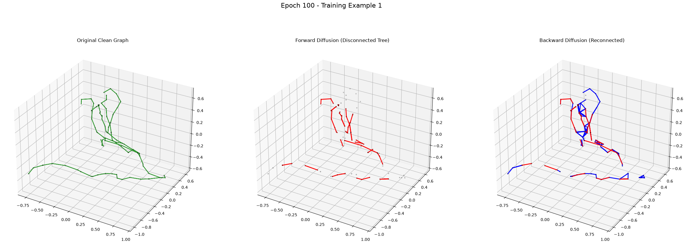

marp: true theme: default paginate: true
Generative Reconstruction of 3D Neuronal Topologies
.swc datasets trace 3D neurons, but they are frequently highly fragmented due to imaging artifacts, staining inconsistencies, and tracing errors.The transition probability for an edge existing at timestep $t$ is given by:
$$ q(E_t | E_0) = \text{Bernoulli}(E_t; \bar{\alpha}_t \cdot E_0) $$
Where: - $E_0$ is the pristine ground-truth edge set. - $\bar{\alpha}t$ decays from $1.0 \to (1.0 - \beta)$ according to a predefined schedule (e.g., linear or cosine).}
We frame this reconstruction as reversing a diffusion (fragmentation) process: 1. Forward Diffusion: Systematically destroy edges of pristine trees to simulate tracing errors. 2. Backward Diffusion: Predict which fragments should connect (Topology). 3. Sequence Generation: Synthesize how they connect in 3D space (Morphology). 4. Heuristic Evaluation: Zero-shot validation against raw image intensity constraints.

The entire pipeline is built upon deep geometric invariances required for 3D biological data:
- E(3) Invariance: Equivariant Graph Neural Networks (EGNNs) process nodes entirely via relative radial distances ($||x_i - x_j||^2$). The model is structurally blind to global translations and is perfectly invariant to 3D rotations/reflections.
- Scale Invariance: Connections are scored using a normalized gap distance ($\text{distance}^2 / \text{graph_variance}$). Standard DDPM generation is done in a normalized bounding box $[-1, 1]$.
- Permutation Invariance: The models utilize scatter_add for local processing and symmetric global attention, ensuring immunity to how the SWC text file is formatted or ordered.
The codebase operates via orchestrated, modular PyTorch loops: - Models: Built on customized EGNNs, continuous DDPMs, and Transformer Encoders. - Trainers: Isolated AMP (Automatic Mixed Precision) and DDP (Distributed Data Parallel) optimization loops. - Zero-Shot Evaluators: CPU-Producer / Multi-GPU-Consumer sliding windows over massive TIFF volumes utilizing Frangi/Sato vesselness filtering.
The config.yaml is meticulously designed to balance VRAM limits against biological scale:
dataloader.max_nodes (VRAM constraint): Biologically, neurons can have 100,000+ nodes. We cap this at 2000 per fragment during training to guarantee O(N^2) Transformer attention doesn't cause GPU Out-of-Memory (OOM) errors.inference.max_joining_distance (Complexity constraint): Searching all possible $N \times N$ fragment pairings is computationally explosive. Capping the search radius to 50 microns leverages local sparsity, reducing candidate generation from $O(N^2)$ to $O(N \log N)$ via KD-Trees.forward_diffusion.beta_end (Curriculum Design): Dictates the ratio of dropped edges. A high beta_end forces the model to learn long-range bridging (hard examples), while a low beta_end focuses on fine-tuning local gaps.